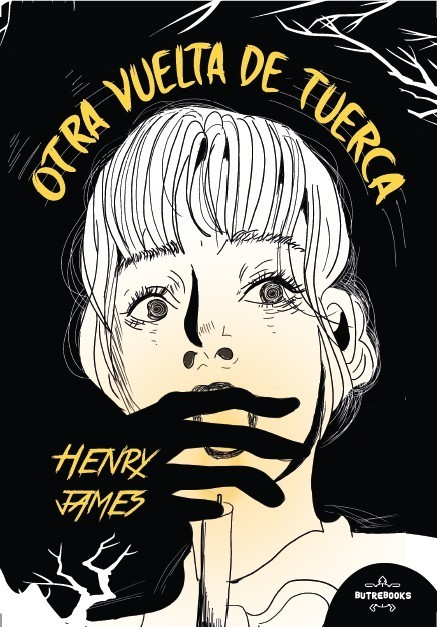
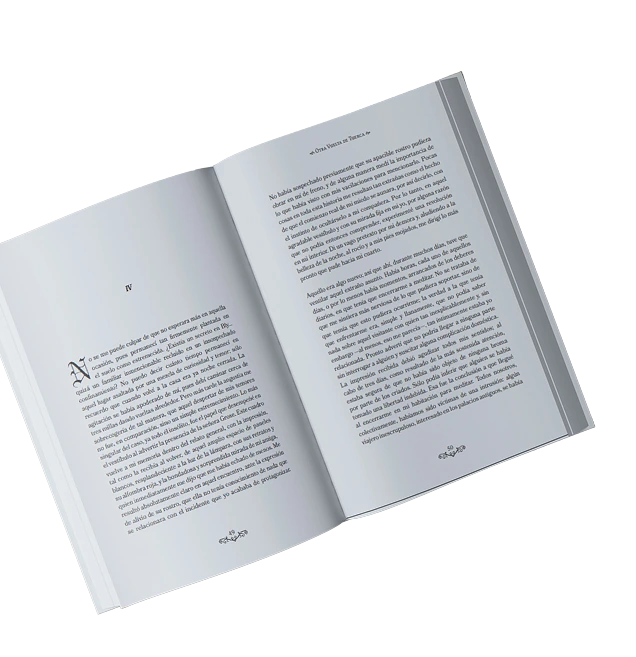
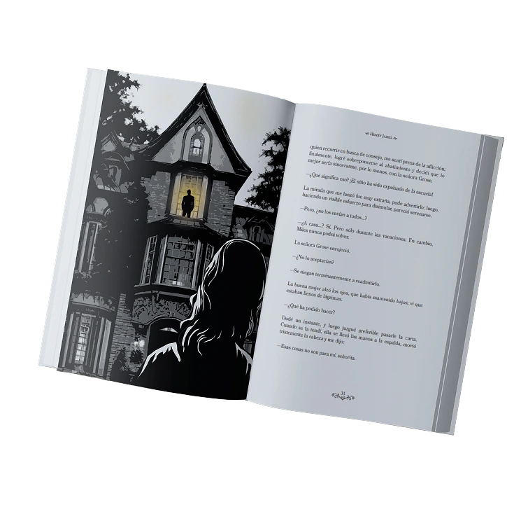
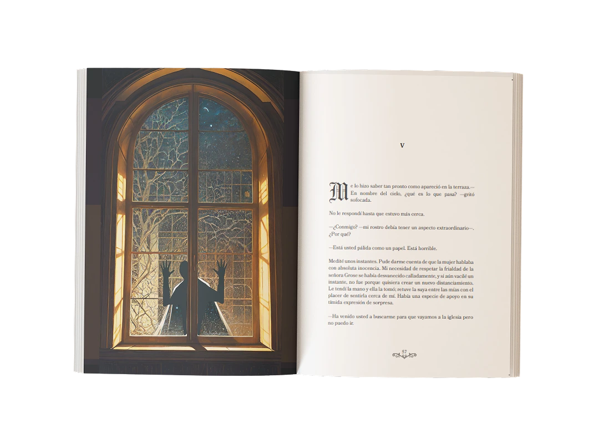

Editorial
Proyectos y portadas
Proyectos y portadas
Maquetación /Portada /Diseño editorial
Rediseño editorial de la novela de Henry James, explorando una estética oscura y narrativa a través de la ilustración, composición y jerarquía tipográfica.


La maquetación combina texto e ilustración para reforzar la atmósfera de la obra sin interferir con la lectura, además de un estilo gótico en la tipografía.
Las ilustraciones cambian según el momento de la historia, manteniendo una estética coherente entre capítulos


Conceptualización de portada
La portada representa la creatividad como un proceso que nace desde dentro. Las oleadas de color que emergen de la figura femenina simbolizan la capacidad de imaginar, crear e innovar.
La segunda idea parte de una reinterpretación de la frase “el cielo es el límite”. En la composición, la protagonista sostiene un espejo que refleja el cielo hacia el espectador, planteando que el cielo no es un límite, sino apenas el comienzo. La creatividad no está fuera de nosotros, sino en nuestra propia capacidad de transformar ideas en nuevas posibilidades.
Maquetación editorial /Portada
El proyecto parte de la idea de traducir el prestigio y la tradición de los grandes premios literarios a un lenguaje editorial contemporáneo.
La propuesta combina una composición sobria, tipografía serif y una paleta cálida con recursos gráficos de inspiración botánica para reforzar el vínculo con la literatura, la cultura y el paso del tiempo.
La maquetación busca equilibrar contenido histórico, imágenes y grandes bloques de texto mediante una jerarquía clara y una retícula ordenada, facilitando la lectura sin perder el carácter editorial de la publicación.